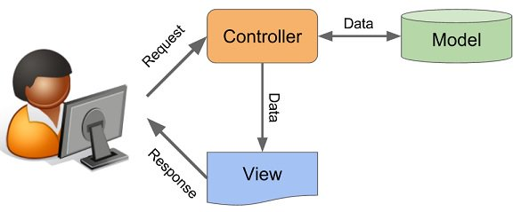
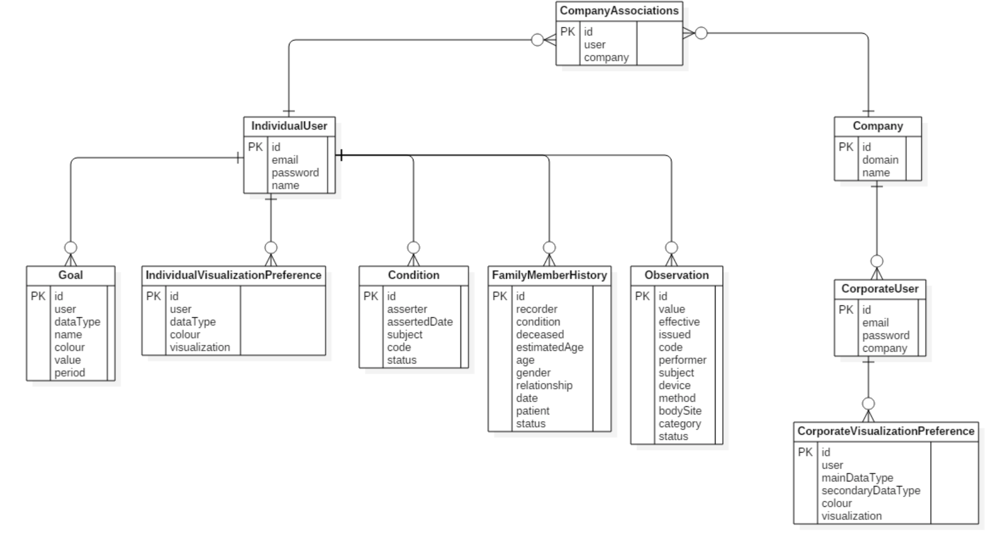
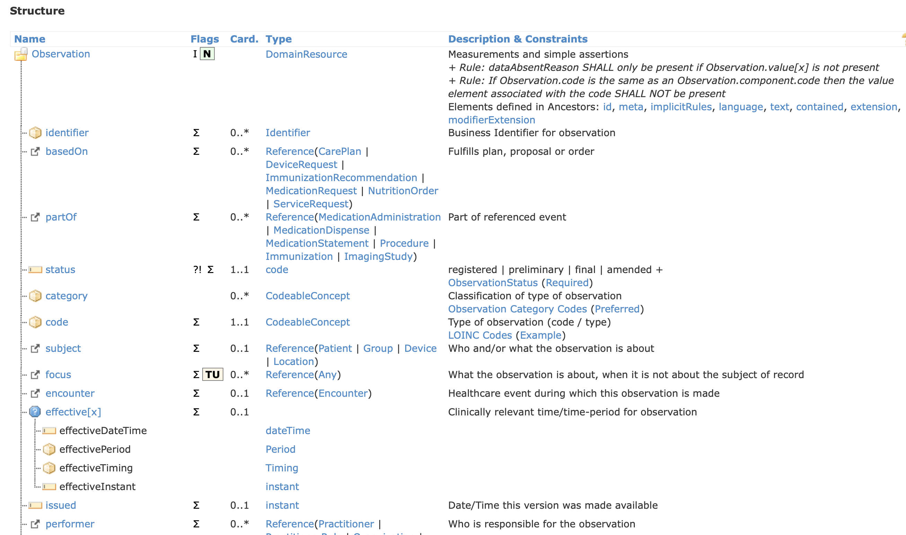
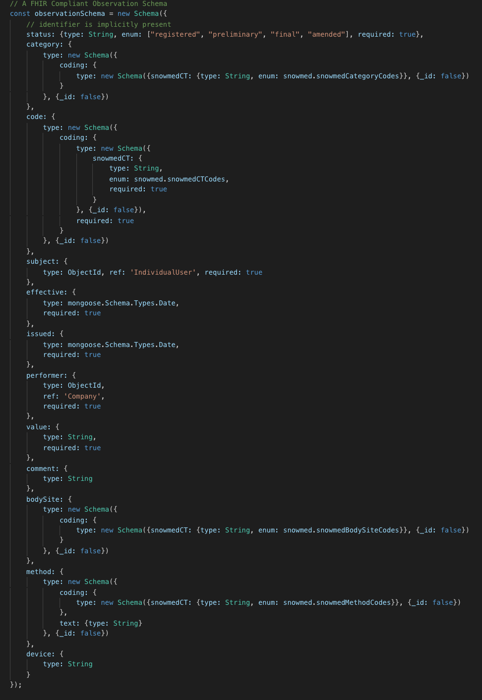
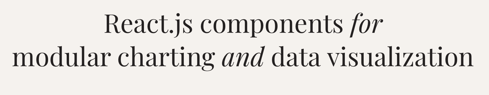
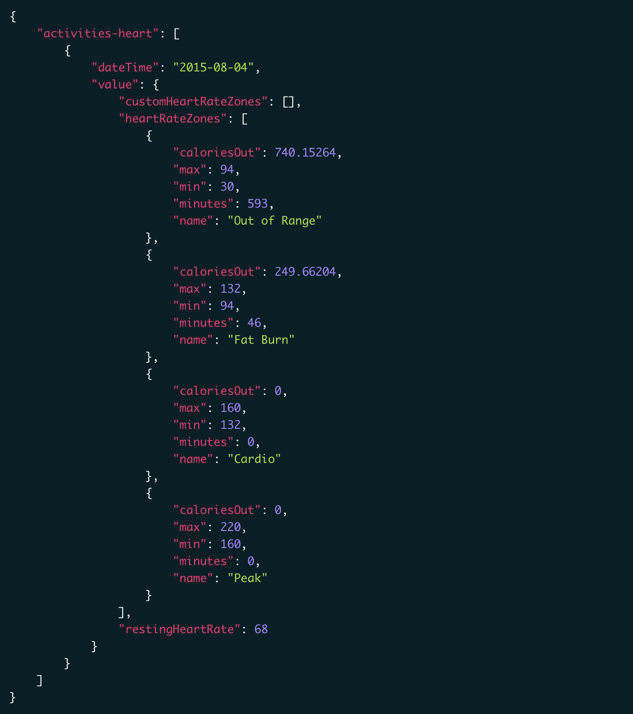

DESIGN
System Architecture Design

Introduction to MERN Stack
MERN is merely an acronym standing for MongoDB, Express.js, React, and Node.js.The entire thing is written in Javascript. The powerful front-end framework, sits at the heart of the stack and is built using a Model-View-Controller design pattern, MongoDB is a NoSQL database management system.
 Front-end Development
Front-end Development
React provides the reactive user interface of your application. React utilizes components, which are reactive in that the user gets immediate feedback as it interacts with the application, and typically run within a user’s browser (although it is isomorphic, capable of being run on a backend server). Without going into too much detail, the frontend framework or library in the stack ultimately (typically) takes the data from the server and presents it in a reactive and interactive user interface.
Back-end Development
The most simple definition, Node.js is Javascript outside of a browser. Node provides a runtime environment for Javascript, much like a browser, but in its own world. In a browser setting, Javascripts must be loaded into an HTML page and that HTML page must be opened in the browser in order to interact with the Javascript. In the Node environment, the HTML middle-man is removed and Javascript files can interact with one another through acting as node modules. Javascript files must meet certain module standards, and then can be loaded into other files through the require keyword. NPM is the default package manager, and allow developers access to tons of third party modules in addition to the ones they create in their own application.
Fitbit API
The Fitbit Web API provides a method for accessing data from Fitbit activity trackers. Our NodeJS server sends HTTP requests to the Fitbit server requesting certain health data. The Fitbit server then responds with the corresponding user data in the form of JSON. Finally, the data is passed through a custom made data parser which then sends this data to our front-end server for generating Visualisations.
Design Patterns
1. Command and Visitor Design pattern
Command & Visitor design pattern is used an operation has to be performed on a group of similar kind of Objects. With the help of visitor pattern, we can move the operational logic from the objects to another class. The main problem relied on the fact that for React JS, each component has a state and information that are passed each time a change is made, and due to the amount of visualisations and the complex relationships between each of them, this meant that all intermediate components would then need to contain code to deal with these changes that are not relevant to them. The main solution was using the React-Redux library which provided a built in visitor pattern that would allow state changes to be passed much more smoothly, as they wouldn’t have to be passed through all of the intermediate components.
2. Flyweight Design Pattern
Flyweight pattern is one of the structural design patterns as this pattern provides ways to decrease object count thus improving application required objects structure. As there was a large amount of objects being created due to out visualisation JS (Victory & D3) library, to avoid recreating the victory & D3 JS we used this pattern which preserved the visualisations over multiple JS reformations, which made the front-end more efficient by cutting those loses.
3. Facade Design Pattern
The Facade design pattern is basically built on the concept of a facade which is an object that serves as a front-facing interface masking more complex underlying or structural code. When performing aggregate queries to the system reroutes through the intermediate Apache Drill connector which accepts SQL queries through http requests. This proved to be an issue when making those queries from the corporate side of our project. The solution was to refactor the data access method to be accessed behind a common facade which hides a large part of the complexity of the system and makes the interface much simpler.
4. Strategy Design Pattern
The strategy pattern enables selecting an algorithm at runtime. Instead of implementing a single algorithm directly, code receives run-time instructions as to which in a family of algorithms to use. On our first few development iterations, we noticed that every production cycle of a visualisation is slightly different and thus, our code had to be refactored in a way such that we would encode the small changes in the processing logic that would have to be done at the visualisation stage. This fixed the issue of the complexity of the decision and processing logic that made the code much less smooth.
5. Model View Controller Architectural Pattern
The MVC design pattern is used for developing user interfaces that divides an application into three interconnected parts. This is done to separate internal representations of information from the ways information is presented to and accepted from the user. This pattern was used for seperating the React components from the underlying logic - this was achieved through the Redux library. This is a
very common design pattern that improves the user interface and the extensibility of the codebase which is a significant part of our project.

Data Storage
Database Management
MongoDB, as previously mentioned, is one of the most popular NoSQL database management systems.
It is document-oriented, has a flexible schema, and has a JSON based query language. Mongo, as is
characteristic of a non-relational database is that it doesn’t rely on columns and rows. This removes an imperative aspect
of dealing with relational databases: Object Relational Mapping layers. Because data is stored in rows and columns in
relational databases, the programmer must format the result of a query into a usable-programming object (think: serializing
an ActiveRecord relationship to convert it into JSON).

Implementation of key functionalities
User Registeration System
The MERN stack authentication system uses a User model as the data structure that stores the user's credentials as email and password, it uses the mongoose library schema. After the user signs in, bcrypt js is used to encrypt the password before it is stored in the database. And there are also several checks such as if the user already exists or he has entered an email in the wrong format.
Fitbit FHiR API & Visualisations
Authenticating users Fitbit data
The first part is to check if the user allows the web application to use his Fitbit data, this allows him to check what kinds of data he wants to share with FHiR FLI and what he doesn't want to share
What is FHiR
"Fast Healthcare Interoperability Resources Specification, which is a standard for exchanging healthcare information electronically." Basically, FHiR is a format that most modern health organisations has agreed upon for sharing electronical health data, FHiR has recently become very popular and it a core part of our project.
Converting the data
After thorough research, we managed to find a Fitbit-FHiR-Converter that was developed in JavaScript. This converter was built on a famous open-source NodeJS library called data-model-mapper-plus which is used to to map (and revert mapping) data objects into another (specified) data model
A FHiR database data model was developed according to the FHiR standards such that we would be able to query the database for data to generate data visualisations, when we use the converter, we had to make sure that the result of the converter was the same as the current FHiR data models (as their are several variations) and according to our database FHiR data model they were almost identical.


We considered and implemented these 2 libraries:
passport-fitbit-oauth2
fitbit-node
However, after several attempts we discovered that passport-fitbit-oauth2 is intended for making users login completely with their Fitbit accounts instead of just authenticating the use of their data which is why we switched to fitbit-node.
We had to develop a fitbit data parser that takes in the fitbit data from the fitbit API server and breaks it down into the distinct values that are later sent to the front-end server for creating visualisations through victory and D3 JS


